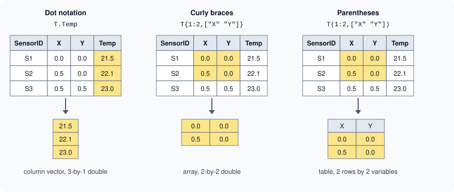

Tables
|
This content was generated with the assistance of AI and should be verified against the official documentation before being relied on in production. |
Written against MATLAB R2026b. GNU Octave 11.3.0 has no table type in its core (a table class exists only in an optional package, which was not installed in the Docker image used for this section), so the examples on this page are not run here: they were checked line by line against the R2026b documentation and show no captured output. Where a result is described in prose, it follows from the documented behavior.
A table stores column-oriented data in named variables. Each variable can have its own type (numbers, text, logicals, categories, datetimes, even cell arrays or nested tables), but all variables must have the same number of rows. It is the right container for what a spreadsheet or a CSV file holds, and the type most data-import functions return. The heatflow thermocouple log is such data: one row per reading, with a sensor ID, a position and a temperature. Time-stamped data has a specialised cousin, the timetable. Tables are for tabular data; for a handful of named values of unrelated shapes, use a structure, and for numeric computation, a matrix.
Terminology
-
A variable is a table column: a named array. A variable is not restricted to a column vector; it can have several columns (a 5-by-2 blood pressure variable, for example) as long as its number of rows is the table height. This is why a table has "rows and variables" rather than "rows and columns".
-
Row names are optional text labels for the rows. Without them, rows are identified only by position.
-
Dimension names are the names of the two dimensions of the table,
RowandVariablesby default. The dimension names are whatT.PropertiescallsDimensionNames; they matter mainly for timetables and for tables built fromstack/unstack. -
Properties are the metadata of the table as a whole (
Description,UserData) or per variable (VariableUnits,VariableDescriptions), reached withT.Properties. -
A subscript picks rows or variables by position, by name, by a logical mask or (for variables) by data type.
-
Height and width are the number of rows and of variables:
height(T)andwidth(T), orsize(T), which returns[height width].
Why tables exist
A matrix holds one numeric type with no labels, so a column’s meaning lives only in the programmer’s head. A cell array holds anything but has no column names and no type guarantee per column. A structure array can label fields, but its natural layout is one record per element, so reading a whole column needs a comma-separated list (see Comma-Separated Lists) and vectorised operations over a column are awkward. A table combines the pieces that analysis needs: columns with names and types, row selection by logical masks, and functions that operate on whole groups of rows.
| Container | Strength | Limitation for tabular data |
|---|---|---|
Matrix |
Fast numeric arithmetic, one type |
No names, one type, no text |
Any content per cell |
No column names; type of a column is not enforced; verbose |
|
Named fields; one record per element |
Column access needs a list; no row filtering functions |
|
Table |
Named, typed columns; row names; metadata; join, group and sort functions |
Slower than a matrix for tight numeric loops; variable access has a syntax cost |
Rule of thumb: read data from a file into a table, clean and group it there, extract numeric arrays with T.Var or T{:,vars} for number crunching, and build the result as a table again to report it.
Creating tables
From arrays: table
T = table(var1,...,varN) makes a table from workspace variables. When the inputs are plain workspace variables, their names become the variable names; for any other expression the names are Var1, Var2, and so on. The VariableNames name-value argument sets the names explicitly; RowNames sets the row names (a string array or cell array of character vectors, with unique entries); DimensionNames renames the two dimensions.
SensorID = ["S1"; "S2"; "S3"; "S4"];
X = [0.0; 0.5; 0.5; 0.0];
Y = [0.0; 0.0; 0.5; 0.5];
Active = [true; true; true; false];
sensors = table(SensorID, X, Y, Active)
% Explicit names and row names
T2 = table(X, Y, VariableNames=["x" "y"], RowNames=SensorID);Not run here. The result sensors is a 4-by-4 table with the variable names SensorID, X, Y and Active. T2 has two variables and the row names S1 to S4.
The other creation routes:
| Syntax | Use |
|---|---|
|
An empty 0-by-0 table. Variables can then be assigned with dot notation. |
|
Preallocates |
|
Converts one numeric (or any homogeneous) array: each column of |
|
Each column of the cell array |
|
A struct array with one element per row becomes a table with one variable per field. A scalar structure becomes a one-row table, unless its fields are arrays of the same length (then use the |
|
Reads a delimited text or spreadsheet file. Covered on Reading and Writing Tabular Data, which also explains |
% Preallocate and fill (not run here)
n = 4;
readings = table(Size=[n 3], VariableTypes=["string" "double" "double"], VariableNames=["SensorID" "Temperature" "Position"]);
readings.SensorID = ["S1"; "S2"; "S3"; "S4"];
readings.Temperature(:) = NaN;
% Convert from a numeric array
A = [0.0 0.0; 0.5 0.0; 0.5 0.5];
P = array2table(A, VariableNames=["X" "Y"])
% Convert from a struct array, one element per row
S = struct("ID", {"S1"; "S2"}, "Temp", {21.5; 22.1});
T3 = struct2table(S)Not run here. P is a 3-by-2 table with variables X and Y; T3 is a 2-by-2 table with the variables ID and Temp.
Source: MATLAB documentation: table
Variable names
By default table variable names may contain spaces and non-ASCII characters and can start with any character; they do not have to be valid MATLAB identifiers. Because such a name cannot follow a dot, access it with dynamic dot notation, for example T.("Mean temperature"). readtable has its own VariableNamingRule option (modify by default, which makes names valid identifiers, or preserve, which keeps the file’s headers). Names must be unique within the table; a duplicate name is an error.
Properties
T.Properties is an object with these properties (taken from the table documentation).
| Property | Meaning |
|---|---|
|
Names of the variables, as a cell array of character vectors. |
|
Row names, or an empty cell array if the table has none. Must be unique. |
|
The names of the two dimensions; the first (default |
|
The data type of each variable (read-only). |
|
Units, such as |
|
A text description per variable. |
|
For timetables: how to interpolate each variable (see Timetables). |
|
A free-form text description and any array of user data for the table as a whole. |
|
Properties added with |
sensors.Properties.VariableUnits = ["" "m" "m" ""];
sensors.Properties.Description = "Thermocouple positions on the heatflow plate";
sensors = addprop(sensors, "Calibrated", "variable");
sensors.Properties.CustomProperties.Calibrated = [true true false false];Not run here. Properties.VariableNames can also be edited to rename variables, though renamevars (below) is clearer.
Indexing: three forms, three results
A table can be indexed with T(rows,vars), T{rows,vars} and T.name, and the three forms return different things. Learning which one returns what removes most table errors.

| Form | Returns | Notes |
|---|---|---|
|
The contents of one variable: an array of the variable’s type |
Fastest way to get one variable. |
|
An array built by concatenating the selected variables |
Selected variables must have compatible types, otherwise concatenation fails. One variable with braces works but is slower than dot notation. |
|
A table with only those rows and variables |
Keeps names, row names, properties and types. The only form that keeps the table container. |
Rows and variables can be given as:
-
Positions: numbers,
:, ranges withend, as inT(end-1:end,1:2). -
Names: a string array or a cell array of character vectors, for variables always, for rows when the table has row names, as in
T{"S2","X"}. -
A logical mask, usually produced by comparing a variable:
T(T.Temp > 22,:). -
A data type for variables, with a
vartypesubscript:T(:,vartype("numeric"))selects all numeric variables;vartypeaccepts a class name,numeric,categoricaland others listed in its documentation.
Temperature = [21.5; 22.1; 23.0; 22.4];
sensors.Temperature = Temperature; % add a variable with dot notation
t = sensors.Temperature; % 4-by-1 double
xy = sensors{1:2, ["X" "Y"]}; % 2-by-2 double
sub = sensors(1:2, ["X" "Y"]); % 2-by-2 table
hot = sensors(sensors.Temperature > 22, :); % rows where the mask is true
nums = sensors(:, vartype("numeric")); % X, Y and Temperature
one = sensors{2, "Temperature"}; % a scalar double
oneT = sensors(2, "Temperature"); % a 1-by-1 tableNot run here. Here t, xy and one are numeric arrays, and sub, hot, nums and oneT are tables.
Assignment works with every form. The right-hand side must match the shape of the selection: a table (or cell array) for parentheses, an array for dot and curly braces.
sensors.Temperature = sensors.Temperature - 0.2; % update a whole variable
sensors{:, ["X" "Y"]} = sensors{:, ["X" "Y"]} * 2; % scale positions (same type)
sensors(2, "Temperature") = table(22.0); % replace one element with a table
sensors.Temperature(sensors.Temperature < 0) = NaN; % assign into extracted dataNot run here. Assigning with dot notation to a name that does not exist creates a new variable at the end.
Adding, removing and rearranging
| Task | Syntax |
|---|---|
Add a variable at the end |
|
Remove variables |
|
Move variables |
|
Rename variables |
|
Split a multicolumn variable |
|
Combine variables |
|
Change a variable’s type |
|
Add a row |
|
Delete rows |
|
Combine tables |
|
Source: MATLAB documentation: Tables
Converting back to other types
A = table2array(T) (or T{:,:}) gives a homogeneous array, C = table2cell(T) a cell array with one cell per element, and S = table2struct(T) a struct array with one element per row (or a scalar struct with ToScalar=true). T2 = rows2vars(T) swaps the roles of rows and variables.
Inspecting a table
-
head(T,k)andtail(T,k)return the first or lastkrows (default 8) as a table, which is a quick look at a big table.T(1:3,:)is the same ashead(T,3). -
summary(T)prints the size, type and, depending on the type, minimum, median, maximum and the number of missing values of each variable. With an output argument it returns a structure with this information. -
height(T),width(T),size(T),T.Properties.VariableNames,istable(T),ismissing(T)give the shape, the names, the type test and a logical mask of missing values. -
unique(T)returns the sorted unique rows;ismemberandismember(A,B,"rows")test table rows against another table (see Sets and Sorting).
Sorting and filtering
sortrows(T,vars) sorts the rows by one or more variables, ascending by default. Give a direction per variable ("descend") and, with the MissingPlacement name-value argument, where missing values go. The second output returns the permutation.
byTemp = sortrows(sensors, "Temperature", "descend");
byPos = sortrows(sensors, ["X" "Y"]);
[~, idx] = sortrows(sensors, "SensorID"); % indices of the sort
hotNames = sensors.SensorID(sensors.Temperature > 22);Not run here. The first line returns the rows ordered from the highest to the lowest temperature. Sorting by "RowNames" sorts by row names when the table has them.
Source: MATLAB documentation: sortrows
Filtering is logical indexing (see Logical Type and Conditions): build a mask from variables and use it as the row subscript. For text columns, ismember(T.SensorID, ["S1" "S3"]) and matches/contains give masks; for categorical columns, comparing with == works directly.
Joining tables by key
When two tables share a key variable (here the sensor ID), a join combines their columns row by row.
| Function | Result |
|---|---|
|
Appends the variables of |
|
Keeps only rows whose key appears in both tables. |
|
Keeps all rows. |
All three accept Keys, LeftKeys, RightKeys, LeftVariables and RightVariables to control which variables are used and kept. Since R2026b, innerjoin and outerjoin accept RowOrder="stable": the output keeps the input order instead of being sorted by key (the default sorts), which can be faster for large tables. The set functions union, intersect, setdiff, setxor and unique also work on whole table rows.
readings = table(["S1"; "S2"; "S2"; "S4"; "S9"], [21.5; 22.1; 22.3; 22.4; 19.0], VariableNames=["SensorID" "Temperature"]);
positions = table(["S1"; "S2"; "S3"; "S4"], [0.0; 0.5; 0.5; 0.0], [0.0; 0.0; 0.5; 0.5], VariableNames=["SensorID" "X" "Y"]);
both = innerjoin(readings, positions, Keys="SensorID");
everyRow = outerjoin(readings, positions, Keys="SensorID", MergeKeys=true);Not run here. both keeps the four readings of S1, S2 and S4 with their coordinates and drops the reading of the unknown sensor S9. everyRow also contains S9 (with missing X and Y) and S3 (with a missing temperature). Plain join(readings,positions) would fail, because S9 has no match in positions.
Source: MATLAB documentation: innerjoin
Computing by group
Grouped calculations are the main reason to keep data in a table. Four tools cover most needs; choose by the shape of the result.
| Tool | Use |
|---|---|
|
The default choice. Computes one or more statistics ( |
|
Since R2023a. A cross-tabulation: group counts, or a computation on one data variable, arranged with row and column groups. Empty categories are omitted. Also available as the Pivot Table Live Editor task. |
|
|
|
|
% Sensor, temperature and hour of a long log, as a table "sensorLog".
byID = groupsummary(sensorLog, "SensorID", ["mean" "max"], "Temperature");
byID2 = groupsummary(sensorLog, "SensorID", "mean", "Temperature", VariableNamingRule="noprefix");
pv = pivot(sensorLog, Rows="SensorID", Columns="Hour", DataVariable="Temperature", Method="mean");
g = findgroups(sensorLog.SensorID);
perMean = splitapply(@mean, sensorLog.Temperature, g);
spread = varfun(@range, sensorLog, InputVariables="Temperature", GroupingVariables="SensorID");Not run here. byID has the variables SensorID, GroupCount, mean_Temperature and max_Temperature; with VariableNamingRule="noprefix" (R2026b) the statistic variable keeps the input name Temperature, which is only unambiguous when a single method is used. pv has one row per sensor and one variable per hour.
Wide to long and back: stack and unstack
S = stack(T,vars,NewDataVariableName=,IndexVariableName=) turns several columns into one variable plus an index variable naming the source column (wide to long). U = unstack(S,dataVar,indexVar) goes the other way. Long format is what groupsummary, plotting by group and statistical functions prefer; wide format is easier to read.
wide = table(["10:00"; "10:01"], [21.5; 21.6], [22.1; 22.0], VariableNames=["Minute" "S1" "S2"]);
long = stack(wide, ["S1" "S2"], NewDataVariableName="Temperature", IndexVariableName="SensorID");
back = unstack(long, "Temperature", "SensorID");Not run here. long has four rows, with Minute, SensorID and Temperature; back returns to two rows and the variables Minute, S1 and S2.
Source: MATLAB documentation: stack
Calculations directly on tables
Since R2023a, arithmetic and functions such as +, .* and mean can be applied to a table (or timetable) without extracting its data, provided every variable supports the operation; use a vartype subscript to apply it to the numeric part. Since R2026b, *, / and \ are also defined with a scalar operand: T * 2 and T / 2 work on a table, and the other operand must be a scalar. Calculations mixing a table with an array follow the rules on "Rules for Table and Timetable Mathematics".
scaled = sensors(:, vartype("numeric")) + 273.15; % Celsius to kelvin on all numeric variables, including X and Y
means = mean(sensors(:, "Temperature")); % a table with the meanNot run here. The first line is shown only to illustrate the syntax: it also adds 273.15 to the coordinate variables X and Y, which would be wrong. In real code select only the temperature variable.
Plots from tables
Many plotting functions take the table as the first argument, followed by the names of the variables to plot. Axis labels then use the variable names, and a string array of names plots several variables together. When the x variable is omitted, the plot uses the row indices (for a table) or the row times (for a timetable).
plot(sensors, "X", "Temperature", "o"); % temperature against position
scatter(sensors, "X", "Y", "filled"); % sensor layout
stackedplot(sensorLog, "Temperature"); % one axis per selected variableNot run here. Whether a given plotting function accepts a table is stated on that function’s page. See also 2-D Plots.
The heatflow sensor table, end to end
The next script uses everything above: a position table, a long reading table, a join, a group summary and a plot. It uses placeholder data and no files.
% heatflow sensors as tables (not run here)
positions = table(["S1"; "S2"; "S3"; "S4"], [0.0; 0.5; 0.5; 0.0], [0.0; 0.0; 0.5; 0.5], ...
VariableNames=["SensorID" "X" "Y"]);
SensorID = ["S1"; "S2"; "S3"; "S4"; "S1"; "S2"; "S3"; "S4"];
Minute = [1; 1; 1; 1; 2; 2; 2; 2];
Temperature = [21.5; 22.1; 23.0; 22.4; 21.7; 22.2; 23.1; NaN];
sensorLog = table(SensorID, Minute, Temperature);
sensorLog.SensorID = categorical(sensorLog.SensorID); % few distinct values
positions.SensorID = categorical(positions.SensorID);
data = innerjoin(sensorLog, positions, Keys="SensorID");
summaryByID = groupsummary(data, "SensorID", "mean", "Temperature");
ok = data(~isnan(data.Temperature), :); % drop the missing reading
plot(ok, "X", "Temperature", "o");Not run here. The named groupsummary methods omit NaN values by default (only nummissing counts them), so the mean of S4 is computed from its one valid reading, 22.4, and the GroupCount of S4 is still 2. A function handle such as @mean does not omit NaN, and would give NaN for S4. See Missing Data for rmmissing, standardizeMissing and the omitmissing option of statistics functions. For a log with real timestamps, use a timetable.
Common errors and pitfalls
The cases below were not run here. The identifiers given are the ones MATLAB reports for those errors; the message text depends on the release, so the descriptions give the cause rather than quote it.
-
Wrong brackets.
T(:,"Temp")returns a table, soT(:,"Temp") + 1adds to a table (allowed since R2023a) andT(:,"Temp") * ones(...)can fail. UseT.TemporT{:,"Temp"}when you want numbers. Conversely,if T(1,"Active")tests a table, not a logical. -
Curly braces with mixed types.
T{1,:}on a table with a string and a numeric variable fails (or silently converts, for numeric and logical mixes); select compatible variables, or useT(1,:). -
Unrecognized variable name. A misspelled
T.Tempratureis an error naming the variable, with the identifierMATLAB:table:UnrecognizedVarName. A name that is not a valid identifier needsT.("Mean temperature"). Variable names are case-sensitive. -
Wrong height on assignment.
T.New = valuesrequiresheight(T)rows (otherwise the identifier isMATLAB:table:RowDimensionMismatch); use a column, not a row vector. Assigning a row vector of the right length to a variable is also an error, not a silent reshape. -
Duplicate or incompatible names in concatenation.
[T1; T2]needs identical variable names;[T1 T2]needs distinct ones, andjoinrequires every key in the left table to have a match. -
joinfails on unmatched keys. Useinnerjoinorouterjoinwhen some keys may be missing from the second table. -
Growing a table in a loop. Each
T(end+1,:) = ...copies the table. Preallocate withSizeandVariableTypes, or collect rows in a cell array or in a few vectors and build the table once at the end. -
Character data. A character array as a table variable is treated as a multicolumn char matrix. Use string arrays or
categoricalfor labels, andcellstronly when an old interface requires it. -
Row names are not data. They are not a variable, so
T.RoworT.Properties.RowNamesare the ways to reach them. Row names must be unique; use an ordinary key variable when they are not. -
Missing values in groups. The named
groupsummarymethods ("mean","sum"and the others) omitNaNin the data, as the namedretimeaggregations do on timetables, while a function handle such as@meansees theNaNand returnsNaN. A missing group key forms its own group by default;IncludeMissingGroups=falsedrops it. -
Speed. Table access has a per-call cost; in a hot loop, extract the variable once (
x = T.X;), work on the array and assign back at the end.
Where older books differ
-
Books for MATLAB R2013a and earlier describe data as matrices, cell arrays and structure arrays. The
tabletype was introduced in R2013b (a date quoted from memory, not confirmed on the current documentation pages); code from before then, and from toolbox-eradatasetarrays, is replaced by tables. -
Names and positions are given with
'Name'character vectors in older code; current code uses string arrays andName=Valuecall syntax (R2021a). -
The
timetabletype (R2016b) replaced hand-made tables with a datenum column; see Timetables. -
groupsummary(R2018a),pivot(R2023a), direct calculations on tables (R2023a) and the table-friendly plotting functions are newer than most books, which usegrpstats(Statistics and Machine Learning Toolbox) oraccumarray; both are mentioned on Toolboxes and Add-On Products only.